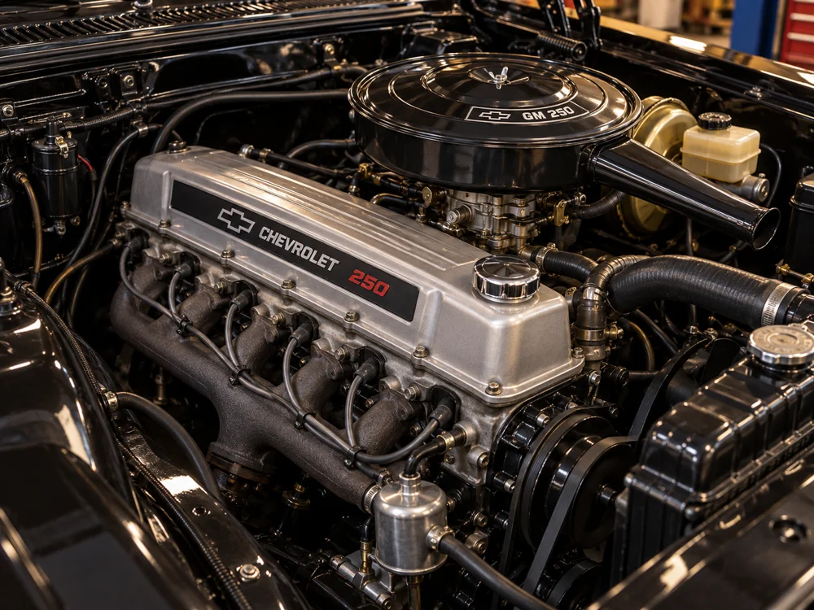
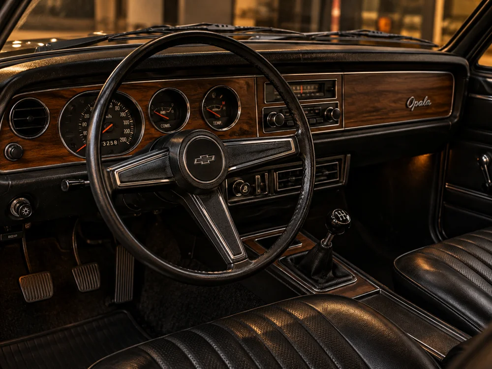
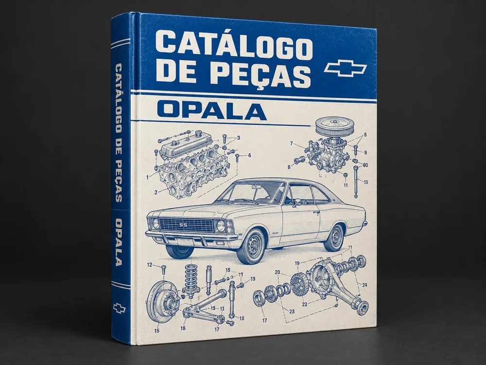
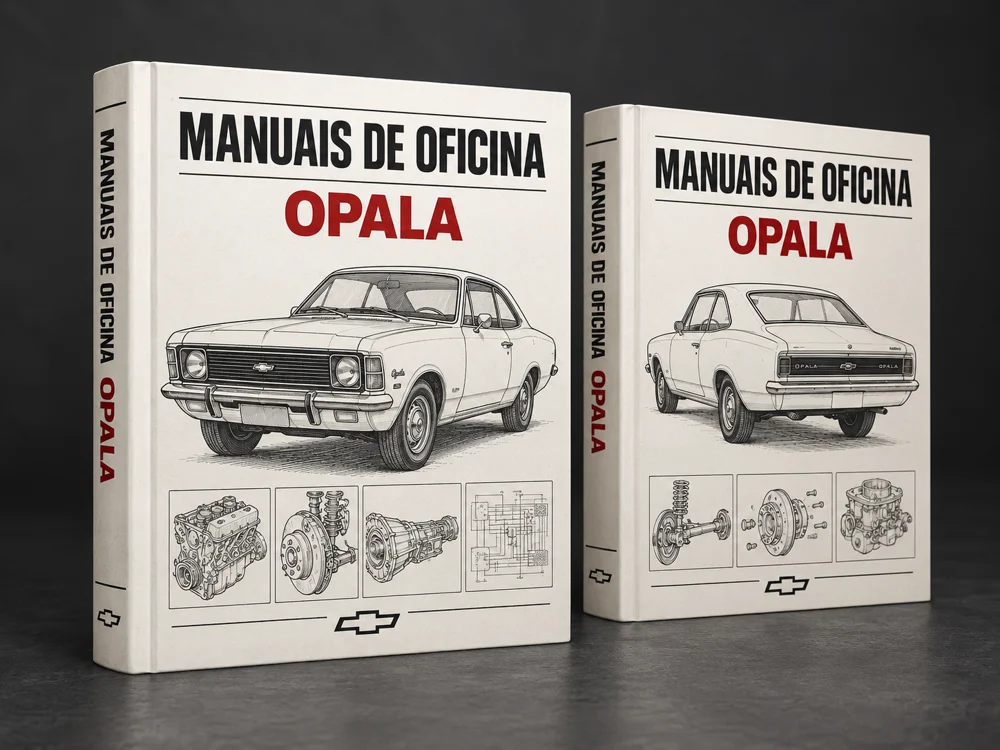

DONOS DE OPALA
Que querem manter seu carro sempre em perfeito estado, com informações organizadas e confiáveis.
MANUAIS • GUIAS • CATÁLOGOS • FERRAMENTAS
Manuais, guias, diagramas, catálogos de peças, checklists e ferramentas práticas para você manter, restaurar ou trabalhar com Opalas com mais segurança e confiança.
ACESSO IMEDIATO • PAGAMENTO SEGURO • GARANTIA DE 7 DIAS
Que querem manter seu carro sempre em perfeito estado, com informações organizadas e confiáveis.
Que trabalham com Opalas e precisam de informações técnicas, diagramas e especificações sempre à mão.

Que buscam referências originais, códigos de peças e detalhes técnicos para projetos de restauração.

Que amam o Opala e querem aprender mais sobre sua história, curiosidades e macetes.
QUEM CONHECE OPALA SABE O VALOR DE UMA BOA REFERÊNCIA
Se você é dono ou mecânico de Opala, talvez já tenha perdido horas procurando um diagrama, ficado em dúvida sobre uma peça ou gasto dinheiro tentando resolver um problema sem uma boa referência.
O difícil nem sempre é colocar a mão na massa. É encontrar a informação de que você precisa, na hora em que precisa — sem depender de arquivos espalhados, buscas intermináveis ou dicas sem contexto.
Seu Opala merece mais do que conteúdo solto na internet.
Tenha um acervo dedicado ao carro que você faz questão de preservar.Conhecimento reunido. Consulta mais prática.
Mais confiança para cuidar do seu clássico.
Um acervo completo, organizado e pronto para usar.
Guia completo com história, manutenção, sistema elétrico, carburador, tabelas técnicas e muito mais.

Códigos, aplicações e referências de peças para facilitar sua busca e evitar erros nas compras.

Motor GM151, GM250 e manual completo de mecânica com procedimentos técnicos.
1978, 1988 e 1992, com informações originais de fábrica.
Para revisão, manutenção preventiva e cuidados com cada sistema do Opala.
Controle de manutenções, gastos e histórico do seu Opala.
Imagens dos materiais ilustrativas. Produto 100% digital.
Acesse todos os materiais de forma simples e organizada pela plataforma da Cakto.
Prévia ilustrativa da organização dos materiais.
Todo esse acervo completo por um valor acessível.
De R$ 97,00
Por apenas
à vista ou 11 x de R$ 5,24
ACESSO IMEDIATO • PAGAMENTO SEGURO • GARANTIA DE 7 DIAS
CONDIÇÃO ESPECIAL POR TEMPO LIMITADO
Se dentro desse período você achar que o material não é para você, é só solicitar o reembolso e devolvemos 100% do seu dinheiro. Sem burocracia e sem perguntas.
TIRE SUAS DÚVIDAS
Após a confirmação do pagamento, você recebe no e-mail informado na compra as orientações para acessar os materiais na área de membros da Cakto.
O e-book O Código do Opala Raiz com 138 páginas, o catálogo de peças com 449 páginas, 2 manuais de oficina, os manuais do proprietário de 1978, 1988 e 1992, 8 checklists premium e a planilha de manutenção.
O produto é 100% digital. Os livros e dispositivos apresentados nas imagens são mockups ilustrativos. Nenhum material físico será enviado.
O acesso é vitalício, sem mensalidade. Você também pode baixar os materiais disponibilizados para consulta.
Sim. Você pode acessar a área de membros pelo celular, computador ou tablet.
O acesso completo custa R$ 47,00 à vista ou 11 parcelas de R$ 5,24. As formas de pagamento disponíveis são apresentadas no checkout da Cakto.
Você tem 7 dias de garantia incondicional a partir da compra para solicitar o reembolso de 100% do valor pago.
SUA PAIXÃO MERECE UM ACERVO COMPLETO
Manuais, catálogos, guias e ferramentas práticas reunidos em um só lugar para você cuidar, manter e restaurar seu Opala com mais confiança.
Tudo isso por R$ 47,00à vista ou 11 x de R$ 5,24
ADQUIRIR POR APENAS R$ 47 →ACESSO IMEDIATO • VITALÍCIO • GARANTIA DE 7 DIAS